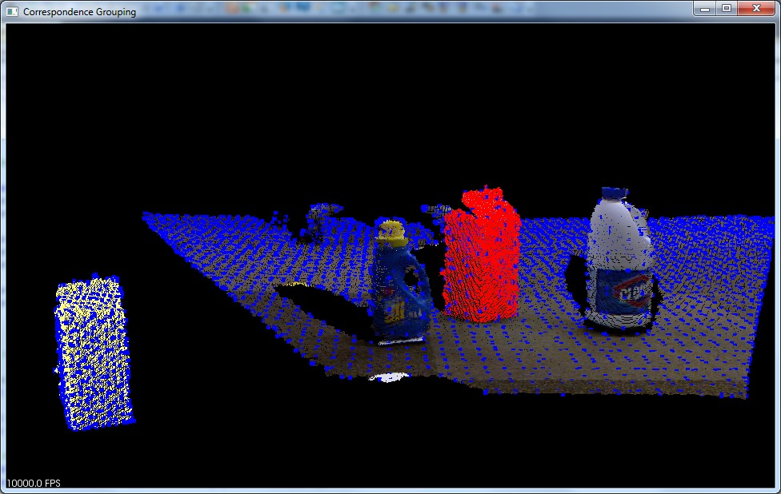
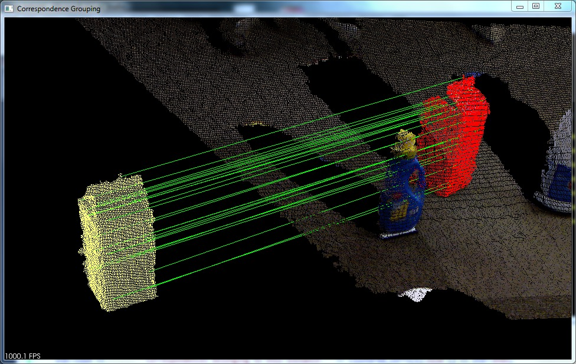
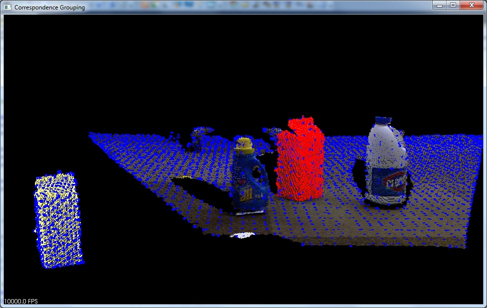
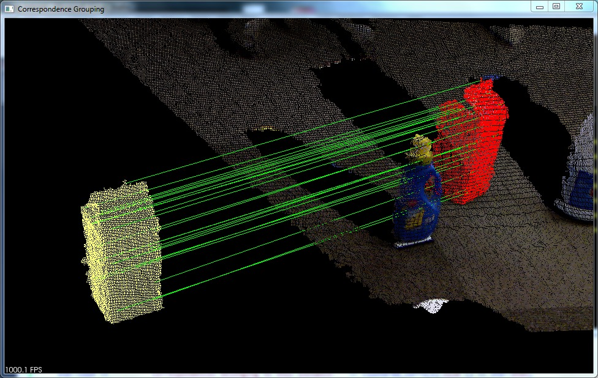

3D Object Recognition based on Correspondence Grouping
This tutorial aims at explaining how to perform 3D Object Recognition based on the pcl_recognition module. Specifically, it explains how to use Correspondence Grouping algorithms in order to cluster the set of point-to-point correspondences obtained after the 3D descriptor matching stage into model instances that are present in the current scene. For each cluster, representing a possible model instance in the scene, the Correspondence Grouping algorithms also output the transformation matrix identifying the 6DOF pose estimation of that model in the current scene.
The code
Before you begin, you should download the PCD dataset used in this tutorial from GitHub (milk.pcd and milk_cartoon_all_small_clorox.pcd) and put the files in a folder of your convenience.
Also, copy and paste the following code into your editor and save it as correspondence_grouping.cpp (or download the source file here).
1#include <pcl/io/pcd_io.h>
2#include <pcl/point_cloud.h>
3#include <pcl/correspondence.h>
4#include <pcl/features/normal_3d_omp.h>
5#include <pcl/features/shot_omp.h>
6#include <pcl/features/board.h>
7#include <pcl/filters/uniform_sampling.h>
8#include <pcl/recognition/cg/hough_3d.h>
9#include <pcl/recognition/cg/geometric_consistency.h>
10#include <pcl/visualization/pcl_visualizer.h>
11#include <pcl/kdtree/kdtree_flann.h>
12#include <pcl/kdtree/impl/kdtree_flann.hpp>
13#include <pcl/common/transforms.h>
14#include <pcl/console/parse.h>
15
16typedef pcl::PointXYZRGBA PointType;
17typedef pcl::Normal NormalType;
18typedef pcl::ReferenceFrame RFType;
19typedef pcl::SHOT352 DescriptorType;
20
21std::string model_filename_;
22std::string scene_filename_;
23
24//Algorithm params
25bool show_keypoints_ (false);
26bool show_correspondences_ (false);
27bool use_cloud_resolution_ (false);
28bool use_hough_ (true);
29float model_ss_ (0.01f);
30float scene_ss_ (0.03f);
31float rf_rad_ (0.015f);
32float descr_rad_ (0.02f);
33float cg_size_ (0.01f);
34float cg_thresh_ (5.0f);
35
36void
37showHelp (char *filename)
38{
39 std::cout << std::endl;
40 std::cout << "***************************************************************************" << std::endl;
41 std::cout << "* *" << std::endl;
42 std::cout << "* Correspondence Grouping Tutorial - Usage Guide *" << std::endl;
43 std::cout << "* *" << std::endl;
44 std::cout << "***************************************************************************" << std::endl << std::endl;
45 std::cout << "Usage: " << filename << " model_filename.pcd scene_filename.pcd [Options]" << std::endl << std::endl;
46 std::cout << "Options:" << std::endl;
47 std::cout << " -h: Show this help." << std::endl;
48 std::cout << " -k: Show used keypoints." << std::endl;
49 std::cout << " -c: Show used correspondences." << std::endl;
50 std::cout << " -r: Compute the model cloud resolution and multiply" << std::endl;
51 std::cout << " each radius given by that value." << std::endl;
52 std::cout << " --algorithm (Hough|GC): Clustering algorithm used (default Hough)." << std::endl;
53 std::cout << " --model_ss val: Model uniform sampling radius (default 0.01)" << std::endl;
54 std::cout << " --scene_ss val: Scene uniform sampling radius (default 0.03)" << std::endl;
55 std::cout << " --rf_rad val: Reference frame radius (default 0.015)" << std::endl;
56 std::cout << " --descr_rad val: Descriptor radius (default 0.02)" << std::endl;
57 std::cout << " --cg_size val: Cluster size (default 0.01)" << std::endl;
58 std::cout << " --cg_thresh val: Clustering threshold (default 5)" << std::endl << std::endl;
59}
60
61void
62parseCommandLine (int argc, char *argv[])
63{
64 //Show help
65 if (pcl::console::find_switch (argc, argv, "-h"))
66 {
67 showHelp (argv[0]);
68 exit (0);
69 }
70
71 //Model & scene filenames
72 std::vector<int> filenames;
73 filenames = pcl::console::parse_file_extension_argument (argc, argv, ".pcd");
74 if (filenames.size () != 2)
75 {
76 std::cout << "Filenames missing.\n";
77 showHelp (argv[0]);
78 exit (-1);
79 }
80
81 model_filename_ = argv[filenames[0]];
82 scene_filename_ = argv[filenames[1]];
83
84 //Program behavior
85 if (pcl::console::find_switch (argc, argv, "-k"))
86 {
87 show_keypoints_ = true;
88 }
89 if (pcl::console::find_switch (argc, argv, "-c"))
90 {
91 show_correspondences_ = true;
92 }
93 if (pcl::console::find_switch (argc, argv, "-r"))
94 {
95 use_cloud_resolution_ = true;
96 }
97
98 std::string used_algorithm;
99 if (pcl::console::parse_argument (argc, argv, "--algorithm", used_algorithm) != -1)
100 {
101 if (used_algorithm.compare ("Hough") == 0)
102 {
103 use_hough_ = true;
104 }else if (used_algorithm.compare ("GC") == 0)
105 {
106 use_hough_ = false;
107 }
108 else
109 {
110 std::cout << "Wrong algorithm name.\n";
111 showHelp (argv[0]);
112 exit (-1);
113 }
114 }
115
116 //General parameters
117 pcl::console::parse_argument (argc, argv, "--model_ss", model_ss_);
118 pcl::console::parse_argument (argc, argv, "--scene_ss", scene_ss_);
119 pcl::console::parse_argument (argc, argv, "--rf_rad", rf_rad_);
120 pcl::console::parse_argument (argc, argv, "--descr_rad", descr_rad_);
121 pcl::console::parse_argument (argc, argv, "--cg_size", cg_size_);
122 pcl::console::parse_argument (argc, argv, "--cg_thresh", cg_thresh_);
123}
124
125double
126computeCloudResolution (const pcl::PointCloud<PointType>::ConstPtr &cloud)
127{
128 double res = 0.0;
129 int n_points = 0;
130 int nres;
131 std::vector<int> indices (2);
132 std::vector<float> sqr_distances (2);
133 pcl::search::KdTree<PointType> tree;
134 tree.setInputCloud (cloud);
135
136 for (std::size_t i = 0; i < cloud->size (); ++i)
137 {
138 if (! std::isfinite ((*cloud)[i].x))
139 {
140 continue;
141 }
142 //Considering the second neighbor since the first is the point itself.
143 nres = tree.nearestKSearch (i, 2, indices, sqr_distances);
144 if (nres == 2)
145 {
146 res += sqrt (sqr_distances[1]);
147 ++n_points;
148 }
149 }
150 if (n_points != 0)
151 {
152 res /= n_points;
153 }
154 return res;
155}
156
157int
158main (int argc, char *argv[])
159{
160 parseCommandLine (argc, argv);
161
162 pcl::PointCloud<PointType>::Ptr model (new pcl::PointCloud<PointType> ());
163 pcl::PointCloud<PointType>::Ptr model_keypoints (new pcl::PointCloud<PointType> ());
164 pcl::PointCloud<PointType>::Ptr scene (new pcl::PointCloud<PointType> ());
165 pcl::PointCloud<PointType>::Ptr scene_keypoints (new pcl::PointCloud<PointType> ());
166 pcl::PointCloud<NormalType>::Ptr model_normals (new pcl::PointCloud<NormalType> ());
167 pcl::PointCloud<NormalType>::Ptr scene_normals (new pcl::PointCloud<NormalType> ());
168 pcl::PointCloud<DescriptorType>::Ptr model_descriptors (new pcl::PointCloud<DescriptorType> ());
169 pcl::PointCloud<DescriptorType>::Ptr scene_descriptors (new pcl::PointCloud<DescriptorType> ());
170
171 //
172 // Load clouds
173 //
174 if (pcl::io::loadPCDFile (model_filename_, *model) < 0)
175 {
176 std::cout << "Error loading model cloud." << std::endl;
177 showHelp (argv[0]);
178 return (-1);
179 }
180 if (pcl::io::loadPCDFile (scene_filename_, *scene) < 0)
181 {
182 std::cout << "Error loading scene cloud." << std::endl;
183 showHelp (argv[0]);
184 return (-1);
185 }
186
187 //
188 // Set up resolution invariance
189 //
190 if (use_cloud_resolution_)
191 {
192 float resolution = static_cast<float> (computeCloudResolution (model));
193 if (resolution != 0.0f)
194 {
195 model_ss_ *= resolution;
196 scene_ss_ *= resolution;
197 rf_rad_ *= resolution;
198 descr_rad_ *= resolution;
199 cg_size_ *= resolution;
200 }
201
202 std::cout << "Model resolution: " << resolution << std::endl;
203 std::cout << "Model sampling size: " << model_ss_ << std::endl;
204 std::cout << "Scene sampling size: " << scene_ss_ << std::endl;
205 std::cout << "LRF support radius: " << rf_rad_ << std::endl;
206 std::cout << "SHOT descriptor radius: " << descr_rad_ << std::endl;
207 std::cout << "Clustering bin size: " << cg_size_ << std::endl << std::endl;
208 }
209
210 //
211 // Compute Normals
212 //
213 pcl::NormalEstimationOMP<PointType, NormalType> norm_est;
214 norm_est.setKSearch (10);
215 norm_est.setInputCloud (model);
216 norm_est.compute (*model_normals);
217
218 norm_est.setInputCloud (scene);
219 norm_est.compute (*scene_normals);
220
221 //
222 // Downsample Clouds to Extract keypoints
223 //
224
225 pcl::UniformSampling<PointType> uniform_sampling;
226 uniform_sampling.setInputCloud (model);
227 uniform_sampling.setRadiusSearch (model_ss_);
228 uniform_sampling.filter (*model_keypoints);
229 std::cout << "Model total points: " << model->size () << "; Selected Keypoints: " << model_keypoints->size () << std::endl;
230
231 uniform_sampling.setInputCloud (scene);
232 uniform_sampling.setRadiusSearch (scene_ss_);
233 uniform_sampling.filter (*scene_keypoints);
234 std::cout << "Scene total points: " << scene->size () << "; Selected Keypoints: " << scene_keypoints->size () << std::endl;
235
236
237 //
238 // Compute Descriptor for keypoints
239 //
240 pcl::SHOTEstimationOMP<PointType, NormalType, DescriptorType> descr_est;
241 descr_est.setRadiusSearch (descr_rad_);
242
243 descr_est.setInputCloud (model_keypoints);
244 descr_est.setInputNormals (model_normals);
245 descr_est.setSearchSurface (model);
246 descr_est.compute (*model_descriptors);
247
248 descr_est.setInputCloud (scene_keypoints);
249 descr_est.setInputNormals (scene_normals);
250 descr_est.setSearchSurface (scene);
251 descr_est.compute (*scene_descriptors);
252
253 //
254 // Find Model-Scene Correspondences with KdTree
255 //
256 pcl::CorrespondencesPtr model_scene_corrs (new pcl::Correspondences ());
257
258 pcl::KdTreeFLANN<DescriptorType> match_search;
259 match_search.setInputCloud (model_descriptors);
260
261 // For each scene keypoint descriptor, find nearest neighbor into the model keypoints descriptor cloud and add it to the correspondences vector.
262 for (std::size_t i = 0; i < scene_descriptors->size (); ++i)
263 {
264 std::vector<int> neigh_indices (1);
265 std::vector<float> neigh_sqr_dists (1);
266 if (!std::isfinite (scene_descriptors->at (i).descriptor[0])) //skipping NaNs
267 {
268 continue;
269 }
270 int found_neighs = match_search.nearestKSearch (scene_descriptors->at (i), 1, neigh_indices, neigh_sqr_dists);
271 if(found_neighs == 1 && neigh_sqr_dists[0] < 0.25f) // add match only if the squared descriptor distance is less than 0.25 (SHOT descriptor distances are between 0 and 1 by design)
272 {
273 pcl::Correspondence corr (neigh_indices[0], static_cast<int> (i), neigh_sqr_dists[0]);
274 model_scene_corrs->push_back (corr);
275 }
276 }
277 std::cout << "Correspondences found: " << model_scene_corrs->size () << std::endl;
278
279 //
280 // Actual Clustering
281 //
282 std::vector<Eigen::Matrix4f, Eigen::aligned_allocator<Eigen::Matrix4f> > rototranslations;
283 std::vector<pcl::Correspondences> clustered_corrs;
284
285 // Using Hough3D
286 if (use_hough_)
287 {
288 //
289 // Compute (Keypoints) Reference Frames only for Hough
290 //
291 pcl::PointCloud<RFType>::Ptr model_rf (new pcl::PointCloud<RFType> ());
292 pcl::PointCloud<RFType>::Ptr scene_rf (new pcl::PointCloud<RFType> ());
293
294 pcl::BOARDLocalReferenceFrameEstimation<PointType, NormalType, RFType> rf_est;
295 rf_est.setFindHoles (true);
296 rf_est.setRadiusSearch (rf_rad_);
297
298 rf_est.setInputCloud (model_keypoints);
299 rf_est.setInputNormals (model_normals);
300 rf_est.setSearchSurface (model);
301 rf_est.compute (*model_rf);
302
303 rf_est.setInputCloud (scene_keypoints);
304 rf_est.setInputNormals (scene_normals);
305 rf_est.setSearchSurface (scene);
306 rf_est.compute (*scene_rf);
307
308 // Clustering
309 pcl::Hough3DGrouping<PointType, PointType, RFType, RFType> clusterer;
310 clusterer.setHoughBinSize (cg_size_);
311 clusterer.setHoughThreshold (cg_thresh_);
312 clusterer.setUseInterpolation (true);
313 clusterer.setUseDistanceWeight (false);
314
315 clusterer.setInputCloud (model_keypoints);
316 clusterer.setInputRf (model_rf);
317 clusterer.setSceneCloud (scene_keypoints);
318 clusterer.setSceneRf (scene_rf);
319 clusterer.setModelSceneCorrespondences (model_scene_corrs);
320
321 //clusterer.cluster (clustered_corrs);
322 clusterer.recognize (rototranslations, clustered_corrs);
323 }
324 else // Using GeometricConsistency
325 {
326 pcl::GeometricConsistencyGrouping<PointType, PointType> gc_clusterer;
327 gc_clusterer.setGCSize (cg_size_);
328 gc_clusterer.setGCThreshold (cg_thresh_);
329
330 gc_clusterer.setInputCloud (model_keypoints);
331 gc_clusterer.setSceneCloud (scene_keypoints);
332 gc_clusterer.setModelSceneCorrespondences (model_scene_corrs);
333
334 //gc_clusterer.cluster (clustered_corrs);
335 gc_clusterer.recognize (rototranslations, clustered_corrs);
336 }
337
338 //
339 // Output results
340 //
341 std::cout << "Model instances found: " << rototranslations.size () << std::endl;
342 for (std::size_t i = 0; i < rototranslations.size (); ++i)
343 {
344 std::cout << "\n Instance " << i + 1 << ":" << std::endl;
345 std::cout << " Correspondences belonging to this instance: " << clustered_corrs[i].size () << std::endl;
346
347 // Print the rotation matrix and translation vector
348 Eigen::Matrix3f rotation = rototranslations[i].block<3,3>(0, 0);
349 Eigen::Vector3f translation = rototranslations[i].block<3,1>(0, 3);
350
351 printf ("\n");
352 printf (" | %6.3f %6.3f %6.3f | \n", rotation (0,0), rotation (0,1), rotation (0,2));
353 printf (" R = | %6.3f %6.3f %6.3f | \n", rotation (1,0), rotation (1,1), rotation (1,2));
354 printf (" | %6.3f %6.3f %6.3f | \n", rotation (2,0), rotation (2,1), rotation (2,2));
355 printf ("\n");
356 printf (" t = < %0.3f, %0.3f, %0.3f >\n", translation (0), translation (1), translation (2));
357 }
358
359 //
360 // Visualization
361 //
362 pcl::visualization::PCLVisualizer viewer ("Correspondence Grouping");
363 viewer.addPointCloud (scene, "scene_cloud");
364
365 pcl::PointCloud<PointType>::Ptr off_scene_model (new pcl::PointCloud<PointType> ());
366 pcl::PointCloud<PointType>::Ptr off_scene_model_keypoints (new pcl::PointCloud<PointType> ());
367
368 if (show_correspondences_ || show_keypoints_)
369 {
370 // We are translating the model so that it doesn't end in the middle of the scene representation
371 pcl::transformPointCloud (*model, *off_scene_model, Eigen::Vector3f (-1,0,0), Eigen::Quaternionf (1, 0, 0, 0));
372 pcl::transformPointCloud (*model_keypoints, *off_scene_model_keypoints, Eigen::Vector3f (-1,0,0), Eigen::Quaternionf (1, 0, 0, 0));
373
374 pcl::visualization::PointCloudColorHandlerCustom<PointType> off_scene_model_color_handler (off_scene_model, 255, 255, 128);
375 viewer.addPointCloud (off_scene_model, off_scene_model_color_handler, "off_scene_model");
376 }
377
378 if (show_keypoints_)
379 {
380 pcl::visualization::PointCloudColorHandlerCustom<PointType> scene_keypoints_color_handler (scene_keypoints, 0, 0, 255);
381 viewer.addPointCloud (scene_keypoints, scene_keypoints_color_handler, "scene_keypoints");
382 viewer.setPointCloudRenderingProperties (pcl::visualization::PCL_VISUALIZER_POINT_SIZE, 5, "scene_keypoints");
383
384 pcl::visualization::PointCloudColorHandlerCustom<PointType> off_scene_model_keypoints_color_handler (off_scene_model_keypoints, 0, 0, 255);
385 viewer.addPointCloud (off_scene_model_keypoints, off_scene_model_keypoints_color_handler, "off_scene_model_keypoints");
386 viewer.setPointCloudRenderingProperties (pcl::visualization::PCL_VISUALIZER_POINT_SIZE, 5, "off_scene_model_keypoints");
387 }
388
389 for (std::size_t i = 0; i < rototranslations.size (); ++i)
390 {
391 pcl::PointCloud<PointType>::Ptr rotated_model (new pcl::PointCloud<PointType> ());
392 pcl::transformPointCloud (*model, *rotated_model, rototranslations[i]);
393
394 std::stringstream ss_cloud;
395 ss_cloud << "instance" << i;
396
397 pcl::visualization::PointCloudColorHandlerCustom<PointType> rotated_model_color_handler (rotated_model, 255, 0, 0);
398 viewer.addPointCloud (rotated_model, rotated_model_color_handler, ss_cloud.str ());
399
400 if (show_correspondences_)
401 {
402 for (std::size_t j = 0; j < clustered_corrs[i].size (); ++j)
403 {
404 std::stringstream ss_line;
405 ss_line << "correspondence_line" << i << "_" << j;
406 PointType& model_point = off_scene_model_keypoints->at (clustered_corrs[i][j].index_query);
407 PointType& scene_point = scene_keypoints->at (clustered_corrs[i][j].index_match);
408
409 // We are drawing a line for each pair of clustered correspondences found between the model and the scene
410 viewer.addLine<PointType, PointType> (model_point, scene_point, 0, 255, 0, ss_line.str ());
411 }
412 }
413 }
414
415 while (!viewer.wasStopped ())
416 {
417 viewer.spinOnce ();
418 }
419
420 return (0);
421}
Walkthrough
Now lets take a look at the various parts of the code to see how it works.
Helper Functions
Lets start with a couple of useful functions: the first one prints on the console a short explanation of the several command line switches that the program can accept.
void
showHelp (char *filename)
{
std::cout << std::endl;
std::cout << "***************************************************************************" << std::endl;
std::cout << "* *" << std::endl;
std::cout << "* Correspondence Grouping Tutorial - Usage Guide *" << std::endl;
std::cout << "* *" << std::endl;
std::cout << "***************************************************************************" << std::endl << std::endl;
std::cout << "Usage: " << filename << " model_filename.pcd scene_filename.pcd [Options]" << std::endl << std::endl;
std::cout << "Options:" << std::endl;
std::cout << " -h: Show this help." << std::endl;
std::cout << " -k: Show used keypoints." << std::endl;
std::cout << " -c: Show used correspondences." << std::endl;
std::cout << " -r: Compute the model cloud resolution and multiply" << std::endl;
std::cout << " each radius given by that value." << std::endl;
std::cout << " --algorithm (Hough|GC): Clustering algorithm used (default Hough)." << std::endl;
std::cout << " --model_ss val: Model uniform sampling radius (default 0.01)" << std::endl;
std::cout << " --scene_ss val: Scene uniform sampling radius (default 0.03)" << std::endl;
std::cout << " --rf_rad val: Reference frame radius (default 0.015)" << std::endl;
std::cout << " --descr_rad val: Descriptor radius (default 0.02)" << std::endl;
std::cout << " --cg_size val: Cluster size (default 0.01)" << std::endl;
std::cout << " --cg_thresh val: Clustering threshold (default 5)" << std::endl << std::endl;
}
The second function does the actual parsing of the command line arguments in order to set the correct parameters for the execution.
void
parseCommandLine (int argc, char *argv[])
{
//Show help
if (pcl::console::find_switch (argc, argv, "-h"))
{
showHelp (argv[0]);
exit (0);
}
//Model & scene filenames
std::vector<int> filenames;
filenames = pcl::console::parse_file_extension_argument (argc, argv, ".pcd");
if (filenames.size () != 2)
{
std::cout << "Filenames missing.\n";
showHelp (argv[0]);
exit (-1);
}
model_filename_ = argv[filenames[0]];
scene_filename_ = argv[filenames[1]];
//Program behavior
if (pcl::console::find_switch (argc, argv, "-k"))
{
show_keypoints_ = true;
}
if (pcl::console::find_switch (argc, argv, "-c"))
{
show_correspondences_ = true;
}
if (pcl::console::find_switch (argc, argv, "-r"))
{
use_cloud_resolution_ = true;
}
std::string used_algorithm;
if (pcl::console::parse_argument (argc, argv, "--algorithm", used_algorithm) != -1)
{
if (used_algorithm.compare ("Hough") == 0)
{
use_hough_ = true;
}else if (used_algorithm.compare ("GC") == 0)
{
use_hough_ = false;
}
else
{
std::cout << "Wrong algorithm name.\n";
showHelp (argv[0]);
exit (-1);
}
}
//General parameters
pcl::console::parse_argument (argc, argv, "--model_ss", model_ss_);
pcl::console::parse_argument (argc, argv, "--scene_ss", scene_ss_);
pcl::console::parse_argument (argc, argv, "--rf_rad", rf_rad_);
pcl::console::parse_argument (argc, argv, "--descr_rad", descr_rad_);
pcl::console::parse_argument (argc, argv, "--cg_size", cg_size_);
pcl::console::parse_argument (argc, argv, "--cg_thresh", cg_thresh_);
}
Its important to say that the only command line parameters required when executing this tutorial are the filenames of the model and the scene, in this exact order. All other parameters are set to a default value that will make the tutorial work correctly with the supplied dataset, although with different models and scene some parameter values might need to be adjusted. You can play around with them to see how they influence the final result.
You can choose between two correspondence clustering algorithms with the command line switch --algorithm (Hough|GC)
- Hough (default)
This is a clustering algorithm based on a 3D Hough voting scheme described in:
F. Tombari and L. Di Stefano: Object recognition in 3D scenes with occlusions and clutter by Hough voting, 4th Pacific-Rim Symposium on Image and Video Technology, 2010.
- GC
This is a geometric consistency clustering algorithm enforcing simple geometric constraints between pairs of correspondences. It builds on the proposal presented in:
H. Chen and B. Bhanu: 3D free-form object recognition in range images using local surface patches, Pattern Recognition Letters, vol. 28, no. 10, pp. 1252-1262, 2007.
Some other interesting switches are -k, -c and -r:
-kshows the keypoints used to compute the correspondences as a blue overlay into the PCL visualizer.
-cdraws a line connecting each pair of model-scene correspondences that survived the clustering process.
-restimates the spatial resolution for the model point cloud and afterwards considers the radii used as parameters as if they were given in units of cloud resolution; thus achieving some sort of resolution invariance that might be useful when using this tutorial with the same command line and different point clouds.
The next function performs the spatial resolution computation for a given point cloud averaging the distance between each cloud point and its nearest neighbor.
double
computeCloudResolution (const pcl::PointCloud<PointType>::ConstPtr &cloud)
{
double res = 0.0;
int n_points = 0;
int nres;
std::vector<int> indices (2);
std::vector<float> sqr_distances (2);
pcl::search::KdTree<PointType> tree;
tree.setInputCloud (cloud);
for (std::size_t i = 0; i < cloud->size (); ++i)
{
if (! std::isfinite ((*cloud)[i].x))
{
continue;
}
//Considering the second neighbor since the first is the point itself.
nres = tree.nearestKSearch (i, 2, indices, sqr_distances);
if (nres == 2)
{
res += sqrt (sqr_distances[1]);
++n_points;
}
}
if (n_points != 0)
{
res /= n_points;
}
return res;
}
Clustering Pipeline
The main function, which performs the actual clustering, is quite straightforward. We will take a look at each part of code as they appear in the proposed example.
First, the program parses the command line arguments and loads the model and scene clouds from disk (using the filenames supplied by the user).
parseCommandLine (argc, argv);
if (pcl::io::loadPCDFile (model_filename_, *model) < 0)
{
std::cout << "Error loading model cloud." << std::endl;
showHelp (argv[0]);
return (-1);
}
if (pcl::io::loadPCDFile (scene_filename_, *scene) < 0)
{
std::cout << "Error loading scene cloud." << std::endl;
showHelp (argv[0]);
return (-1);
}
As a second step, only if resolution invariance flag has been enabled in the command line, the program adjusts the radii that will be used in the next sections by multiplying them for the estimated model cloud resolution.
if (use_cloud_resolution_)
{
float resolution = static_cast<float> (computeCloudResolution (model));
if (resolution != 0.0f)
{
model_ss_ *= resolution;
scene_ss_ *= resolution;
rf_rad_ *= resolution;
descr_rad_ *= resolution;
cg_size_ *= resolution;
}
std::cout << "Model resolution: " << resolution << std::endl;
std::cout << "Model sampling size: " << model_ss_ << std::endl;
std::cout << "Scene sampling size: " << scene_ss_ << std::endl;
std::cout << "LRF support radius: " << rf_rad_ << std::endl;
std::cout << "SHOT descriptor radius: " << descr_rad_ << std::endl;
std::cout << "Clustering bin size: " << cg_size_ << std::endl << std::endl;
}
Next, it computes the normals for each point of both the model and the scene cloud with the NormalEstimationOMP estimator, using the 10 nearest neighbors of each point (this parameter seems to be fairly ok for many datasets, not just for the one provided).
pcl::NormalEstimationOMP<PointType, NormalType> norm_est;
norm_est.setKSearch (10);
norm_est.setInputCloud (model);
norm_est.compute (*model_normals);
norm_est.setInputCloud (scene);
norm_est.compute (*scene_normals);
Then it downsamples each cloud in order to find a small number of keypoints, which will then be associated to a 3D descriptor in order to perform keypoint matching and determine point-to-point correspondences. The radii used for the UniformSampling are either the ones set with the command line switches or the defaults.
pcl::UniformSampling<PointType> uniform_sampling;
uniform_sampling.setInputCloud (model);
uniform_sampling.setRadiusSearch (model_ss_);
uniform_sampling.filter (*model_keypoints);
std::cout << "Model total points: " << model->size () << "; Selected Keypoints: " << model_keypoints->size () << std::endl;
uniform_sampling.setInputCloud (scene);
uniform_sampling.setRadiusSearch (scene_ss_);
uniform_sampling.filter (*scene_keypoints);
std::cout << "Scene total points: " << scene->size () << "; Selected Keypoints: " << scene_keypoints->size () << std::endl;
//
The next stage consists in associating a 3D descriptor to each model and scene keypoint. In our tutorial, we compute SHOT descriptors using SHOTEstimationOMP.
descr_est.setInputCloud (model_keypoints);
descr_est.setInputNormals (model_normals);
descr_est.setSearchSurface (model);
descr_est.compute (*model_descriptors);
descr_est.setInputCloud (scene_keypoints);
descr_est.setInputNormals (scene_normals);
descr_est.setSearchSurface (scene);
descr_est.compute (*scene_descriptors);
//
// Find Model-Scene Correspondences with KdTree
Now we need to determine point-to-point correspondences between model descriptors and scene descriptors. To do this, the program uses a KdTreeFLANN whose input cloud has been set to the cloud containing the model descriptors. For each descriptor associated to a scene keypoint, it efficiently finds the most similar model descriptor based on the Euclidean distance, and it adds this pair to a Correspondences vector (only if the two descriptors are similar enough, i.e. their squared distance is less than a threshold, set to 0.25).
match_search.setInputCloud (model_descriptors);
// For each scene keypoint descriptor, find nearest neighbor into the model keypoints descriptor cloud and add it to the correspondences vector.
for (std::size_t i = 0; i < scene_descriptors->size (); ++i)
{
std::vector<int> neigh_indices (1);
std::vector<float> neigh_sqr_dists (1);
if (!std::isfinite (scene_descriptors->at (i).descriptor[0])) //skipping NaNs
{
continue;
}
int found_neighs = match_search.nearestKSearch (scene_descriptors->at (i), 1, neigh_indices, neigh_sqr_dists);
if(found_neighs == 1 && neigh_sqr_dists[0] < 0.25f) // add match only if the squared descriptor distance is less than 0.25 (SHOT descriptor distances are between 0 and 1 by design)
{
pcl::Correspondence corr (neigh_indices[0], static_cast<int> (i), neigh_sqr_dists[0]);
model_scene_corrs->push_back (corr);
}
}
std::cout << "Correspondences found: " << model_scene_corrs->size () << std::endl;
//
// Actual Clustering
The last stage of the pipeline is the actual clustering of the previously found correspondences.
The default algorithm is Hough3DGrouping, that is based on an Hough Voting process. Please note that this algorithm needs to associate a Local Reference Frame (LRF) for each keypoint belonging to the clouds which are passed as arguments! In this example, we explicitly compute the set of LRFs using the BOARDLocalReferenceFrameEstimation estimator before calling the clustering algorithm.
// Compute (Keypoints) Reference Frames only for Hough
//
pcl::PointCloud<RFType>::Ptr model_rf (new pcl::PointCloud<RFType> ());
pcl::PointCloud<RFType>::Ptr scene_rf (new pcl::PointCloud<RFType> ());
pcl::BOARDLocalReferenceFrameEstimation<PointType, NormalType, RFType> rf_est;
rf_est.setFindHoles (true);
rf_est.setRadiusSearch (rf_rad_);
rf_est.setInputCloud (model_keypoints);
rf_est.setInputNormals (model_normals);
rf_est.setSearchSurface (model);
rf_est.compute (*model_rf);
rf_est.setInputCloud (scene_keypoints);
rf_est.setInputNormals (scene_normals);
rf_est.setSearchSurface (scene);
rf_est.compute (*scene_rf);
// Clustering
pcl::Hough3DGrouping<PointType, PointType, RFType, RFType> clusterer;
clusterer.setHoughBinSize (cg_size_);
clusterer.setHoughThreshold (cg_thresh_);
clusterer.setUseInterpolation (true);
clusterer.setUseDistanceWeight (false);
clusterer.setInputCloud (model_keypoints);
clusterer.setInputRf (model_rf);
clusterer.setSceneCloud (scene_keypoints);
clusterer.setSceneRf (scene_rf);
clusterer.setModelSceneCorrespondences (model_scene_corrs);
//clusterer.cluster (clustered_corrs);
clusterer.recognize (rototranslations, clustered_corrs);
}
else // Using GeometricConsistency
{
pcl::GeometricConsistencyGrouping<PointType, PointType> gc_clusterer;
Note
Its not necessary to explicitly compute the LRFs before calling the clustering algorithm. If the clouds which are fetched to the clustering algorithm do not have a set of LRFs associated, Hough3DGrouping automatically computes them before performing clustering. In particular, this happens when calling the recognize (or cluster) method without setting the LRFs: in this case you need to specify the radius of the LRF as an additional parameter for the clustering algorithm (with the setLocalRfSearchRadius method).
Alternatively to Hough3DGrouping, and by means of the appropriate command line switch described before, you might choose to employ the GeometricConsistencyGrouping algorithm. In this case the LRF computation is not needed so we are simply creating an instance of the algorithm class, passing the right parameters and invoking the recognize method.
gc_clusterer.setGCSize (cg_size_);
gc_clusterer.setGCThreshold (cg_thresh_);
gc_clusterer.setInputCloud (model_keypoints);
gc_clusterer.setSceneCloud (scene_keypoints);
gc_clusterer.setModelSceneCorrespondences (model_scene_corrs);
//gc_clusterer.cluster (clustered_corrs);
gc_clusterer.recognize (rototranslations, clustered_corrs);
}
//
// Output results
Note
The recognize method returns a vector of Eigen::Matrix4f representing a transformation (rotation + translation) for each instance of the model found in the scene (obtained via Absolute Orientation) and a vector of Correspondences (a vector of vectors of Correspondence) representing the output of the clustering i.e. each element of this vector is in turn a set of correspondences, representing the correspondences associated to a specific model instance in the scene.
If you only need the clustered correspondences because you are planning to use them in a different way, you can use the cluster method.
Output and Visualization
We are almost at the end of this tutorial. The last few words are related to the part of the program that displays the results on the console and over a PCL Visualizer window.
As a first thing we are showing, for each instance of the model found into the scene, the transformation matrix and the number of correspondences extracted by the clustering method.
std::cout << "\n Instance " << i + 1 << ":" << std::endl;
std::cout << " Correspondences belonging to this instance: " << clustered_corrs[i].size () << std::endl;
// Print the rotation matrix and translation vector
Eigen::Matrix3f rotation = rototranslations[i].block<3,3>(0, 0);
Eigen::Vector3f translation = rototranslations[i].block<3,1>(0, 3);
printf ("\n");
printf (" | %6.3f %6.3f %6.3f | \n", rotation (0,0), rotation (0,1), rotation (0,2));
printf (" R = | %6.3f %6.3f %6.3f | \n", rotation (1,0), rotation (1,1), rotation (1,2));
printf (" | %6.3f %6.3f %6.3f | \n", rotation (2,0), rotation (2,1), rotation (2,2));
printf ("\n");
printf (" t = < %0.3f, %0.3f, %0.3f >\n", translation (0), translation (1), translation (2));
}
//
// Visualization
The program then shows in a PCLVisualizer window the scene cloud with a red overlay where an instance of the model has been found.
If the command line switches -k and -c have been used, the program also shows a stand-alone rendering of the model cloud. If keypoint visualization is enabled, keypoints are displayed as blue dots and if correspondence visualization has been enabled they are shown as a green line for each correspondence which survived the clustering process.
pcl::PointCloud<PointType>::Ptr off_scene_model (new pcl::PointCloud<PointType> ());
pcl::PointCloud<PointType>::Ptr off_scene_model_keypoints (new pcl::PointCloud<PointType> ());
if (show_correspondences_ || show_keypoints_)
{
// We are translating the model so that it doesn't end in the middle of the scene representation
pcl::transformPointCloud (*model, *off_scene_model, Eigen::Vector3f (-1,0,0), Eigen::Quaternionf (1, 0, 0, 0));
pcl::transformPointCloud (*model_keypoints, *off_scene_model_keypoints, Eigen::Vector3f (-1,0,0), Eigen::Quaternionf (1, 0, 0, 0));
pcl::visualization::PointCloudColorHandlerCustom<PointType> off_scene_model_color_handler (off_scene_model, 255, 255, 128);
viewer.addPointCloud (off_scene_model, off_scene_model_color_handler, "off_scene_model");
}
if (show_keypoints_)
{
pcl::visualization::PointCloudColorHandlerCustom<PointType> scene_keypoints_color_handler (scene_keypoints, 0, 0, 255);
viewer.addPointCloud (scene_keypoints, scene_keypoints_color_handler, "scene_keypoints");
viewer.setPointCloudRenderingProperties (pcl::visualization::PCL_VISUALIZER_POINT_SIZE, 5, "scene_keypoints");
pcl::visualization::PointCloudColorHandlerCustom<PointType> off_scene_model_keypoints_color_handler (off_scene_model_keypoints, 0, 0, 255);
viewer.addPointCloud (off_scene_model_keypoints, off_scene_model_keypoints_color_handler, "off_scene_model_keypoints");
viewer.setPointCloudRenderingProperties (pcl::visualization::PCL_VISUALIZER_POINT_SIZE, 5, "off_scene_model_keypoints");
}
for (std::size_t i = 0; i < rototranslations.size (); ++i)
{
pcl::PointCloud<PointType>::Ptr rotated_model (new pcl::PointCloud<PointType> ());
pcl::transformPointCloud (*model, *rotated_model, rototranslations[i]);
std::stringstream ss_cloud;
ss_cloud << "instance" << i;
pcl::visualization::PointCloudColorHandlerCustom<PointType> rotated_model_color_handler (rotated_model, 255, 0, 0);
viewer.addPointCloud (rotated_model, rotated_model_color_handler, ss_cloud.str ());
if (show_correspondences_)
{
for (std::size_t j = 0; j < clustered_corrs[i].size (); ++j)
{
std::stringstream ss_line;
ss_line << "correspondence_line" << i << "_" << j;
PointType& model_point = off_scene_model_keypoints->at (clustered_corrs[i][j].index_query);
PointType& scene_point = scene_keypoints->at (clustered_corrs[i][j].index_match);
// We are drawing a line for each pair of clustered correspondences found between the model and the scene
viewer.addLine<PointType, PointType> (model_point, scene_point, 0, 255, 0, ss_line.str ());
}
}
}
while (!viewer.wasStopped ())
{
viewer.spinOnce ();
}
return (0);
}
Compiling and running the program
Create a CMakeLists.txt file and add the following lines into it:
1cmake_minimum_required(VERSION 3.5 FATAL_ERROR)
2
3project(correspondence_grouping)
4
5find_package(PCL 1.5 REQUIRED)
6
7include_directories(${PCL_INCLUDE_DIRS})
8link_directories(${PCL_LIBRARY_DIRS})
9add_definitions(${PCL_DEFINITIONS})
10
11add_executable (correspondence_grouping correspondence_grouping.cpp)
12target_link_libraries (correspondence_grouping ${PCL_LIBRARIES})
After you have created the executable, you can then launch it following this example:
$ ./correspondence_grouping milk.pcd milk_cartoon_all_small_clorox.pcd
Or, alternatively, if you prefer specifying the radii in units of cloud resolution:
$ ./correspondence_grouping milk.pcd milk_cartoon_all_small_clorox.pcd -r --model_ss 7.5 --scene_ss 20 --rf_rad 10 --descr_rad 15 --cg_size 10
Remember to replace milk.pcd and milk_cartoon_all_small_clorox.pcd with model and scene filenames, in this exact order. If you want you can add other command line options as described at the beginning of this tutorial.
Note
If you are using different point clouds and you dont know how to set the various parameters for this tutorial you can use the -r flag and try setting the LRF and descriptor radii to 5, 10, 15 or 20 times the actual cloud resolution. After that you probably will have to tweak the values by hand to achieve the best results.
After a few seconds, you will see an output similar to:
Model total points: 13704; Selected Keypoints: 732
Scene total points: 307200; Selected Keypoints: 3747
Correspondences found: 1768
Model instances found: 1
Instance 1:
Correspondences belonging to this instance: 24
| 0.968 -0.148 0.201 |
R = | -0.146 -0.989 -0.023 |
| 0.202 -0.007 -0.979 |
t = < -0.171, -0.204, 0.043 >
You may see warnings about invalid reference frames (this can happen if a keypoint does not have enough other points in its neighborhood). If these warnings are only displayed for few points and the results look good otherwise, you can ignore them, else you should try to adapt the parameters.
The output window should look like this (depending on the command line options used):
 



{kind=link}
{kind=link}